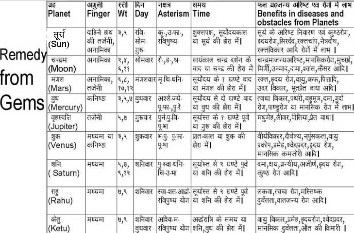

|
Table of Contents
|
Introduction
ग्रहशान्ति के उपाय तीन हैं :-
(1) वारव्रत (जैसे कि शनि के लिए शनिवार का व्रत)| राहू के लिए शनिवार, केतु के लिए मंगलवार | जैसे लोग रविवार या मंगलवार का व्रत करते हैं वैसे ही अन्य वारों के व्रत करें, जितना कठोर व्रत करेंगे उतना लाभ होगा |
(2) अंगूठी में रत्न : http://vedicastrology.wikidot.com/graha-shanti-propitiation-of-planets#toc8
(3) वैदिक मन्त्र जप (किसी ब्रह्मचारी बालक द्वारा जिसका उपनयन हो चुका हो) :-http://vedicastrology.wikidot.com/graha-shanti-propitiation-of-planets#toc3
~~~~~~~~~~~~~~~~~~~~~~~~~~~~
God is neither Hindu, nor Christian or Muslim. God is simply God. Differences in religions are man made. True Christian humility and piety are enough to please God. But it is very very difficult to attain that humility and piety, because the wickedness in human soul does not wither away by mere wishful thinking. None of us think we have wickedness within us. The wickedness remains hidden in most of us, polished by training in society. We behave as socialized good beings, but inside there is a devil in all of us. Horoscope is the result of our own Karmas (actions) in past lives. Thus, we create our own Fate. God is not a wicked Devil to send misfortunes to us. We invite misfortunes through our own past actions which we do not remember. There is only one way to get rid of our misfortunes : new good Karmas. But these Karmas must be methodical and not whimsical. There are two ways to do this.
The best way to get rid of misfortunes is to kill the Unconscious Mind which is the storehouse of all active and dormant good and devilish instincts and desires inherited from past lives in the form of Horoscope, and thus to become perfectly Enlightened (really Conscious). For this, the aim should be to control sleep, dreams, thoughts, desires, etc through 24-hour Meditation and Self-Awareness, watching our Mind and our deeds like a Witness and not like a participant in the dramas of this world. Detachment from one's own Mind enlightens and empowers the real Soul. Desire for This World is the source of all sorrows. Desire for the Other is actually the desire to find the Real Self in others through love, friendships, relations, etc. It is foolishness to try to find the Self in the Other. But all humans are fools in this sense. All our worldly knowledge and expertise is superficial, and goes to waste with death. The Real ( which is the ignorant soul) within us is a small child, trying foolishly to find its own Real in the Other. Remedy is true Self-Knowledge. Without it, all knowledge is ultimately useless and wastage of time and energy. True Self-Knowledge kills all desires, and killing all mundane desires awakens the ignorant Soul. Constant self-awareness like a witness (=meditation, Dhyaana) is most helpful in generating real and eternal happiness in our lives. All sorts of mundane happiness is an occasional episode in the general drama of pain (Jude the Obscure, Thomas Hardy). Carnal, sensual instincts need to be killed forcibly in the initial stage to become fit for proper Meditation. Eating and sleeping habits need to be controlled. We must give up all violence against others, all anger, all non-vegetarian food, all resentment against others for one's sorrows, because we get what we deserve due to our own horoscopes which is created by our past actions.
Fasting without destroying the body is helpful in controlling the Unconscious. Spices, salts, oils, wine, etc must be given up in food. Cow's ghee is good but it is not easily available in Europe, its nearest equivalent is butter (cow's , not buffalo's). Food must not be prepared to please the taste. All sense organs must be chastized. Libido must be controlled 100%, even during dreams. Vedic mantra japa is helpful only if the performer has these qualities. But now-a-days it is very difficult to find such persons. But you can attain these qualities yourself, and once you enter into the realm of the Real, all your prayers will be answered by the Almighty whether your prayers are in Sanskrit, Greek, Macedonian or English. God knows all languages.
There are many persons who advocate that JyotishaRemedies do not work, and there are hordes of philistine astrologers who fleece the public in the name of Remedies which do not work. But it is wrong to throw the baby with bathwater. Remedies work if performed with piety and chastity.
Second method of Graha Shaanti is the Vedic method described below :
1).General Rules
Sections 3).Vedic Mantras and 6).Mahamrityunjaya Mantra are Vedic Mantras which should not be chanted by non-brahmins and non-brahmachaaris. Even caste brahmins who are not brahmachaaris cannot get the benefits of these mantras. In ancient era, grihasthas were also brahmachaaris because begetting children according to Dharma does not destroy brahmacharya, but libidinous relation with wife is against Vedic Dharma, which allows begetting offsprings only through Garbhaadhaana Samskaara. Therefore, try to find some 15 year old pious brahmin boy for chanting Vedic mantras and ask them to recite mantras silently, or avoid these mantras. Tantric mantras have no such restriction, but they need utmost care in life style. Personally, I treat all castes equally, and avoided eating food cooked by anyone including brahmins (=svayam-paaka), but I do not want to go against classics while dealing with serious afflictions needing Graha-shaanti, that is why I prefer brahmachaari brahmin boys for recitation of Vedic mantras.
~~~~~~~~~~~~~~~~~~~~~~~~~~~~
~~~~~~~~~~~~~~~~~~~~~~~~~~~~
2).Vaara-vrata
~~~~~~~~~~~~~~~~~~~~~~~~~~~~
3).Vedic Mantras
Number of Japa (recitation) of Vedic Mantras for planets : (after being increased 4 times for Kaliyuga) :-
| Numbers of Japa | |||||||
| Planets | Number | ||||||
|---|---|---|---|---|---|---|---|
| Sun सूर्य | 28000 | ||||||
| Moon चन्द्र | 44000 | ||||||
| Mars मंगल | 40000 | ||||||
| Mercury बुध | 28000 | ||||||
| Jupiter बृहस्पति | 76000 | ||||||
| Venus शुक्र | 64000 | ||||||
| Saturn शनि | 92000 | ||||||
| Rāhu राहु | 72000 | ||||||
| Ketu केतु | 68000 | ||||||
~~~~~~~~~~~~~~~~~~~~~~~~~~~~
4).Daana for Anishta-graha (Donations Malefic Planets)
~~~~~~~~~~~~~~~~~~~~~~~~~~~~
5).Tantric Mantras
~~~~~~~~~~~~~~~~~~~~~~~~~~~~
6).Mahamrityunjaya Mantra
~~~~~~~~~~~~~~~~~~~~~~~~~~~~
7).Period of Affliction according to Nakshatra in which Diseases start
~~~~~~~~~~~~~~~~~~~~~~~~~~~~
8).Gems, method of using them and their benefits
~~~~~~~~~~~~~~~~~~~~~~~~~~~~
9).Remedy from Gems
~~~~~~~~~~~~~~~~~~~~~~~~~~~~
10).Navagraha Shaanti
If lots of planets are malefic, then Navagraha-shaanti is a must. For it, download and chant the following files from the Files section at the bottom of this page.
NAVAGRAHA_MANTRA.pdf
NAVAGRAHA_DHYANAM.pdf
NAVAGRAHA_PIDAHARA_STOTRAM.pdf
NavagrahaStotram.pdf
11).Stotras of Individual Planets
For it, download and chant the following files (according to planetary dashaas) from the Files section at the bottom of this page :-
ADITYA.pdf
SURYA1000.pdf
Suryashtakam.pdf
CHANDRA_KAVACHAM.pdf
CHANDRA28_STOTRAM.pdf
RINAMOCHAKA_MANGALA_STOTRAM.pdf
ANGARAKA_STOTRAM.pdf
MANGALA.pdf
BUDHA_KAVACHAM.pdf
BUDHA25_STOTRAM.pdf
BRIHASPATI_KAVACHAM.pdf
JUPITER.pdf
VENUS.pdf
SHANI1000.pdf
SATURN.pdf
SHANAISHCHARA_STAVARAJA.pdf
SHANI_VAJRAPANJARA_KAVACHAM.pdf
RAHU.pdf
RAHU_KAVACHAM.pdf
KETU_KAVACHAM.pdf
KETU25_STOTRAM.pdf
12).Japa
Japa is most effective when it is purely Maanasika-Japa ; Upaanshu Japa is 50% effective ; and Vaachika Japa is merely 25% fruitful : this is an ancient shloka. It means Japa on loudspeakers has zero benefit and when it disturbs others then the results are negative.
Upaanshu means when tongue moves but sound does not come out. Vaachika means when the sound is audible. Maanasika means there is no sound and no tongue movement and the mind is concentrated on the words and meanings of the Japa and no other idea is allowed to enter into the mind. The degree of effectiveness of Japa is proportional to the degree of success in concentration : if no other idea entering into the Mind has become a habit then the mantra has become Siddha (i.e., mantra-siddhi) and is bound to give fruits to the full extent. That state of mind should be at least Dhaaranaa, if not Dhyaana or Samaadhi. Gita states that Japa is the highest form of Yagya (Yajna).
Maanasika-Japa : the words come flying towards the Agyaa-chakra from a distance in a rythmic manner and they are perceived by mind's eye, and the mind itself is devoid of all thoughts and desires (as much as possible).
Japa is not only for the learned people. There is no bar of caste or creed on Japa. Anyone can do it. But there are certain mantras which everyone must not use. There are fixed rules and procedures for siddhi and application of mantras. Certain mantras give adverse results if used for wrong purposes. For instance, the meaning of Gaayatri mantra is that the person chanting it is praying for getting such an intellect which remains fixed on the Lord, i.e., it is the mantra for entering into Samaadhi, for which giving up all desires is a must. But sometimes people use it for fulfilling worldly desires, which is foolish. The meaning of a mantra must not go against its application.
It must never be forgotten that all deities are various manifestations of the same Almighty (according to Rigveda). That Almighty has no form, no image, and no temple. Hence doubts anout mutual effectiveness of various deities and their mantras or stotras are mere distractions.
The effectiveness of a mantra or stotra depends on the degree of mental involvement and concentration. That deity and that prayer and that ritual and method is most fruitful which is most effective in binding the mind to the prayer, i.e., which is nearest to the heart. Purity of heart and chaste life style must accompany Japa &c because no one can cheat deities. It is wrong to think that we should remain chaste for only one or two hours of worship and are free to do anything for the rest of day.
It is best to keep away from those offline or online persons and groups which preach spirituality but in actual life are dedicated to money-making in the name of spirituality.
[ D-20 divisional chart is for Upaasanaa. Its Vimshottari should be made according to lunar longitude of D-20, and the deity as well as current ruling planets of Vimshottari of D-20 should be propitiated for removing internal and external obstacles in Upaasanaa (worship, meditation, Japa, etc). The 40 deities of D-20 are all females and their propitiation is secret, but well known methods of planetary propitiation (Graha-shaanti) can be used for the MD and AD planets of D-20, esp if they are badly placed in the D-20 chart. In casting D-20 chart, reverse order for even signs should be used as mentioned clearly in BPHS, but such an option is available only in two softwares as far as I know : JHora and Kundalee. My personal experience is that SSS should be used for planetary longitudes in astrology (which is more important in higher divisionals like D-20). ]
Conclusions : Why Propitiate Planets ?
किसी भी ज्योतिषीय उपचार में ज्योतिषी की पूजा नहीं होती , और न ही ज्योतिषी को देवता या विधाता मानने की बात होती है । देवताओं की आराधना की जाती है । समस्त ज्योतिषीय उपचार तीन किस्म के होते हैं : जप , तप और रत्नादि । व्रत भी तप के ही अन्तर्गत आते हैं । रत्नादि भी ग्रहदेवताओं के पूजन के ही अंग हैं । ये समस्त उपाय देवताओं को लक्ष्य करके किये जाते हैं । ज्योतिषीय उपचार में केवल ग्रहदेवता की ही नहीं, अन्यान्य देवताओं के पूजन का आदेश भी प्राचीन ग्रन्थों में मिलता है (जैसे कि बृहत्-पराशर होराशास्त्र)। अतः ज्योतिषीय उपचार के विरोध का अर्थ है देवताओं की सत्ता और सामर्थ्य में आस्था का विरोध ।
तब प्रश्न उठता है : यदि देवताओं के पूजन द्वारा भाग्य को बदलना संभव नहीं , तो विधाता भी भाग्य के नियन्ता नहीं हो सकते , क्योंकि कोई दिव्य शक्ति यदि मनुष्य के भाग्य का विधाता है तो उस दिव्य शक्ति को व्रत-तप , जप-पूजन आदि द्वारा प्रसन्न करके भाग्य को बदला भी जा सकता है । ज्योतिषीय उपचार का विरोध करने वाले तर्क दे सकते हैं कि मनुष्य का कर्म ही भाग्य बनाता है , इसमें देवताओं का कोई दखल नहीं । यदि इस तर्क को यदि मान भी लिया जाय तो क्या व्रत-तप को कर्म नहीं माना जा सकता ? व्रत-तप से चिढ़ क्यों ? आधुनिक भोगवादी संस्कृति तपस्या को पागलपन मानती है । औपचारिक और अनौपचारिक शिक्षा एवं प्रचार के माध्यमों द्वारा भोग-विलास को ही बढ़ावा दिया जाता है ।
इस भौतिकवादी सोच का एक और पहलू है : ज्योतिषीय फल को देने वाले कौन हैं ? भौतिक ग्रह-पिण्ड ? भौतिकवादी ज्योतिषियों का कहना है कि ग्रह-पिण्डों के भौतिक गुण , जैसे कि गुरुत्वाकर्षण-शक्ति, के कारण ही ग्रहों का ज्योतिषीय प्रभाव पड़ता है । ये लोग इतना भी नहीं सोचते कि ग्रहों की भौतिक शक्तियों में परस्पर लाखों गुणा का अन्तर रहता है , और राहु-केतु में तो कोई भौतिक गुण नहीं होते । अतः भौतिक-विज्ञान के आधार पर ज्योतिष का सत्यापन असम्भव है । यही कारण है कि संसार का एक भी वैज्ञानिक ज्योतिष-शास्त्र को आधिकारिक तौर पर मान्यता देने पक्ष में नहीं है । मनुष्य के चमड़े के रंग से बुध ग्रह का क्या सम्बन्ध है ? क्या भौतिक-विज्ञान के किसी भी नियम या लक्षण द्वारा ऐसे प्रश्नों का उत्तर देना सम्भव है ? जाहिर है बिना अभौतिक (आधिदैविक, आध्यात्मिक) तत्वों के ज्योतिष-शास्त्र एक कदम भी नहीं चल सकता।
कर्म स्वतः भाग्य का रूप ले लेता है , या कर्मों के आधार पर भाग्य बनाने वाले नियन्ता दिव्य शक्तियों का भी अस्तित्व है ? इन विषयों पर प्राचीन और मध्य युगों में विस्तृत शास्त्रार्थ हुआ करते थे । कर्म स्वतः भाग्य का रूप लेता है तो तपस्या जैसे नए कर्मों द्वारा भाग्य को बदलना भी सम्भव है । यदि कर्मों के आधार पर भाग्य बनाने वाले नियन्ता दिव्य शक्तियां कहीं हैं, तो उनके पूजन, जप-तप द्वारा भाग्य को बदला जा सकता है । दोनों ही परिस्थितियों में भाग्य को बदलना सम्भव है ।
एक क्षण के लिए मान लें कि भाग्य को बदलने का कोई उपाय नहीं है । इसका अर्थ यह हुआ कि भाग्य (Destiny) ही सब कुछ है, Free Will और नए कर्मों का अस्तित्व नहीं है ; मनुष्य कुछ भी करने के लिए स्वतन्त्र नहीं है । उसकी इच्छाएं और उसके समस्त कर्म भाग्य द्वारा ही निर्धारित होते हैं । यदि कर्म द्वारा भाग्य को प्रभावित करना सम्भव नहीं है , तो प्रारब्ध का स्रोत पिछले कर्म नहीं हो सकते । ऐसी मानसिकता कुछ सम्प्रदायों में है : किसी ख़ास देवता को मान लो, और ख़ास पद्धति से प्रार्थना करो, तो नरक जाने से बच जाओगे , भले ही समस्त पाप करते रहो : दुनिया भर में लूट-मार मचाओ, अनेक पत्नियां रखो (यद्यपि ऊपर वाला एक पुरुष पर औसतन एक ही नारी भेजता है), धर्म के समस्त लक्षणों के विपरीत आचरण करो ।
कर्म का सिद्धान्त मनुष्य को उसके कर्मों के प्रति उत्तरदायी बनाता है और नए कर्मों के द्वारा पिछले कर्मों के फलों को सुधारने का भी अवसर प्रदान करता है । कर्म का सिद्धान्त केवल एक ही देश में प्रचलित रहा है : किस देश में धर्म की गंगा बहती है । यहां 'धर्म' का अर्थ सम्प्रदाय नहीं है ।
यदि द्वादश-भावों के वास्तविक अर्थों पर गहन चिन्तन करें तो पाएंगे कि भारतीय धर्म (वैदिक, जैन, और बौद्ध) की नींव पर ही ज्योतिष-शास्त्र के बारहों घर बने हैं । और भारतीय धर्म यही सिखाता है कि हर मनुष्य में "अहम ब्रह्मास्मि" बनने की क्षमता सुषुप्त है । अपने कर्मों (अविद्या) द्वारा हर मनुष्य मृत्यु के पार जा सकता है, और वास्तविक ज्ञान द्वारा अमृत पद पर स्थिर हो सकता है ("अविद्यया मृत्युम् तीर्त्वा, विद्यया अमृतम् अश्नुते" - यजुर्वेद, अन्तिम अध्याय, जो ईशोपनिषद के नाम से प्रसिद्ध है)।
ज्योतिषीय उपचार का विरोध करने वाले वास्तव में भारतीय धर्म के विरोधी हैं, क्योंकि ग्रह-शान्ति के मन्त्र वैदिक हैं, तपस्या द्वारा पिछले कर्मों को काटने का विचार भी वैदिक-जैन-बौद्ध हैं । ज्योतिषीय उपचार का विरोध वही लोग करते हैं जो यज्ञ और कर्मकाण्ड के विरोधी हैं ।
कर्म के सिद्धान्त को नहीं मानने वाले लोग वास्तव में मनुष्य को पाश से बंधे पशु मानते हैं जो भाग्य के खूँटे से जकड़े हैं, खूँटे को हिला नहीं सकते । ऐसे भाग्यवादियों से भले तो एक कवि थे जिन्होंने लिखा : "खूंटियों पर टँगा आदमी / रह जाएगा कब तक सोचता / कि उसका नहीं यह खूंटियों का दोष है"।
आजकल ज्योतिषीय उपचार के नाम पर अधिकांशतः धोखा-धड़ी ही हो रही है । ज्योतिषीय उपचार का लाभ तभी मिलता है जब ज्योतिषी लोभ से ग्रस्त न हो, यजमान के कल्याण की भावना से उपचार कराये, और ज्योतिषी एवं यजमान वास्तविक भक्त हों । वे किस सम्प्रदाय को मानते हैं और किस देवता को पूजते हैं इसका महत्त्व नहीं है । महत्व है सच्ची आस्था और भक्ति का । गलत विचारों में आस्था वास्तब में अनास्था नहीं, अस्तित्ववादी दार्शनिकों की शब्दावली में "Bad Faith " है । चेतन तत्वों में अनास्था और जड़ पिण्डों में आस्था भी एक दुष्ट-आस्था है जो ज्योतिषियों को दिग्भ्रमित कर रही है।
मृत्यु को सदा के लिए टालना सनातन धर्म का अन्तिम लक्ष्य रहा है , जिसे 'मोक्ष' कहते हैं । किन्तु भौतिक शरीर में अमरत्व न तो सम्भव है, और न ही उचित । यदि किसी को भौतिक शरीर में अमरत्व का वरदान मिल जाय तो कुछ ही दशकों या शताब्दियों के बाद वे मर्त्यलोक की नौटंकी से "बोर" हो जाएंगी । ज्योतिषीय उपचार का कभी भी यह लक्ष्य नहीं रहा है कि मृत्यु को सदा के लिए टालकर अमरत्व प्राप्त किया जाय । ऐसे उपचार के दो ही प्रत्यक्ष उद्देश्य होते हैं : अकालमृत्यु को टालना और शारीरिक कष्ट को घटाना । तीसरा अल्प-प्रचलित उद्देश्य है सही मानसिकता के साथ शान्ति-पूर्वक आयुर्दा द्वारा प्राप्त मृत्यु को स्वीकार करना ।